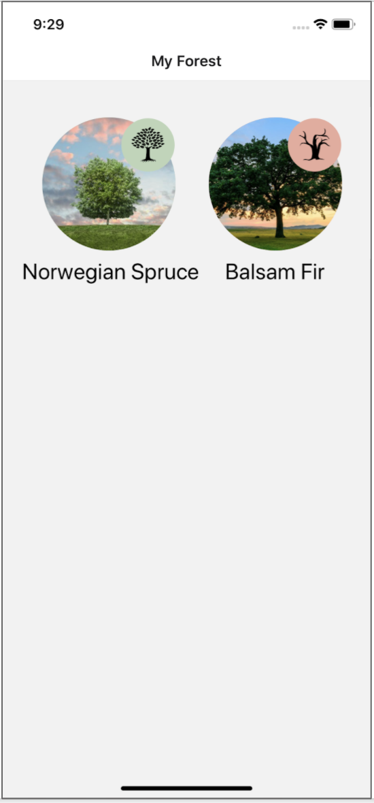
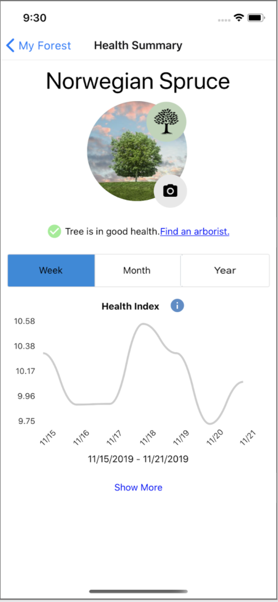
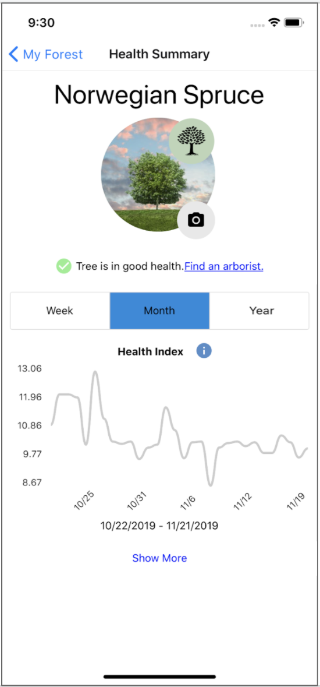
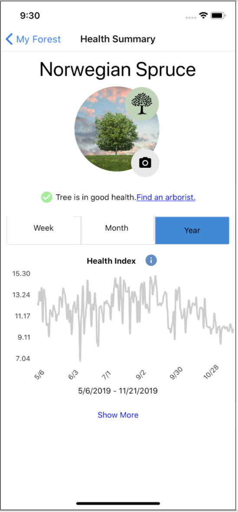
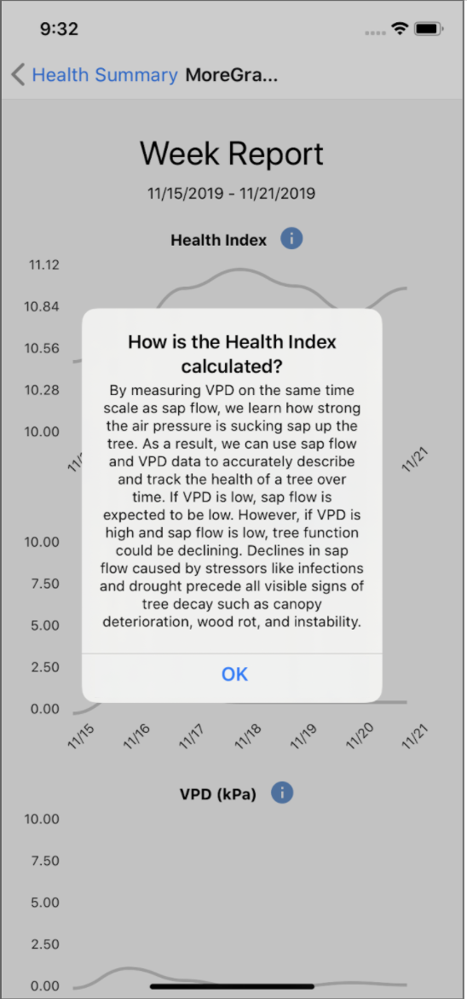
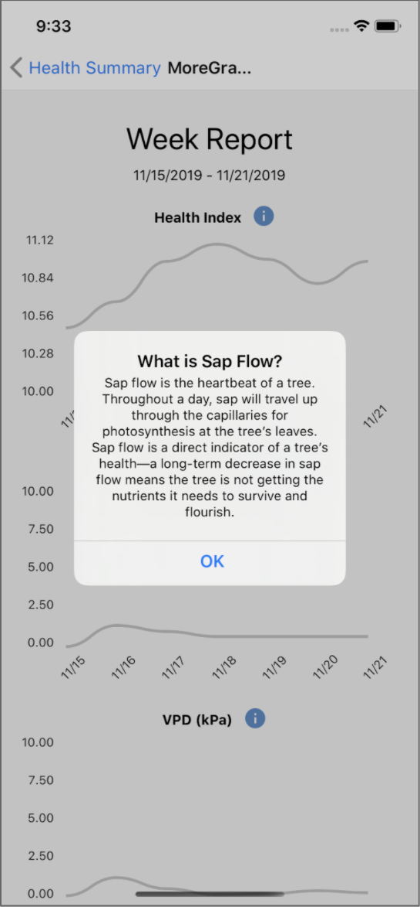
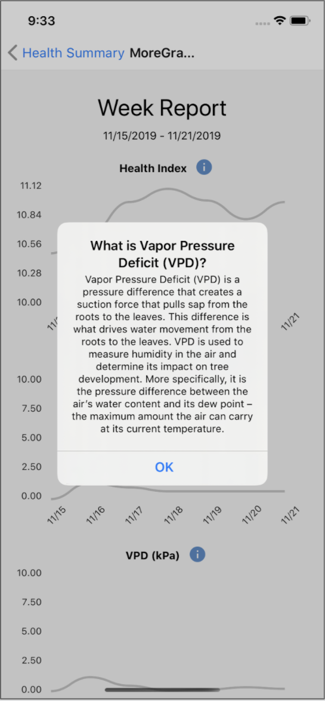

Sappi
Sappi is an app which aims to provide homeowners with early warning signs of health risks to their trees before visual signs appear
SKILLS
Design Research, App Design, React Native Development, Agile
PROJECT
COMP_SCI 394: Agile Software Management Course Project
TEAMMATES
George Malty, Pravika Joshi, Fenghang Yao, Yutao Wu, Jiezhuo Lyu
TIMELINE
6 weeks
Sappi is a mobile companion app that displays tree health data in terms of humidity, temperature, and sap flow over time. The prototype is meant to eventually collect real-time data transmitted via bluetooth from a device attached to individual trees. Since Sappi was built while the client team was in the progress of finalizing hardware design, all app data displayed was from a previously collected dataset.
Tree-Specific Status Screens
Sappi's landing page welcomes users with a forest screen that shows individual trees and a color-coded icon indicating health status. Individual tree screens display health index data over the past week, month, and year.
  Visualizing Health Time Series Data
To view more detailed trends in collected tree health data, users can expand data graphs to display the health index, sap flow, and vapor pressure deficit (VPD) for the selected time range.
Defining Tree Health Metrics
Information icons provide users with more detailed explanations for how tree metrics are calculated and used in determining overall health status. This accommodates users who are not arborists and are less familiar with the terminology.
  Tree Decline Notifications and Resources
When the app detects a decline in tree health, the status indicator icon turns red and shows a tree without leaves. A notification prompts users to seek attention for the tree by finding a nearby arborist.